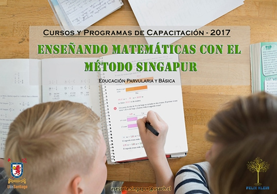
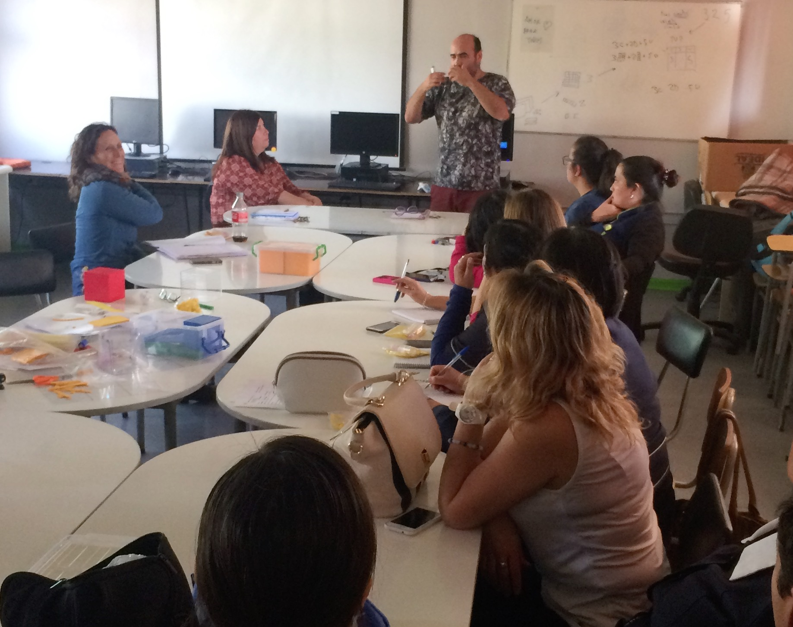

15 Ene 2019
Beca curso Método Singapur
Nos complace informar que hasta el viernes 22 de Febrero del 2019, todos los docentes que deseen realizar uno de Ver más

15 Ene 2019
Cursos y Programas de Capacitación 2019
Enseñando matemática con el Método Singapur Educación Parvularia y Básica ¿Qué es el Método Singapur para la enseñanza de las Matemáticas?

10 Abr 2018
Centro Félix Klein participa en taller de catastro y uso de material concreto para matemáticas
En el contexto de las actividades de asesoría en didáctica de las matemáticas que el CFK ofrece a CORMUP, se...

04 Abr 2018
Universidad de Santiago de Chile impulsa didáctica en matemática para superar déficit en educación básica
Si bien muchos estudiantes de octavo básico conocen las operaciones de cálculos, al momento de enfrentarse a un problema matemático...